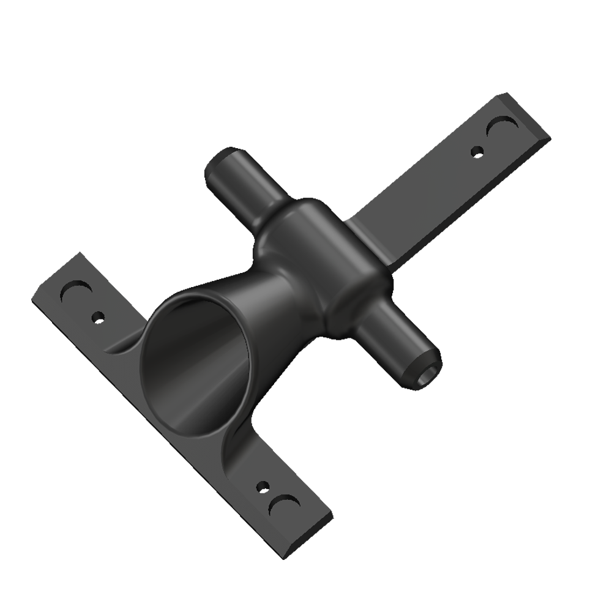
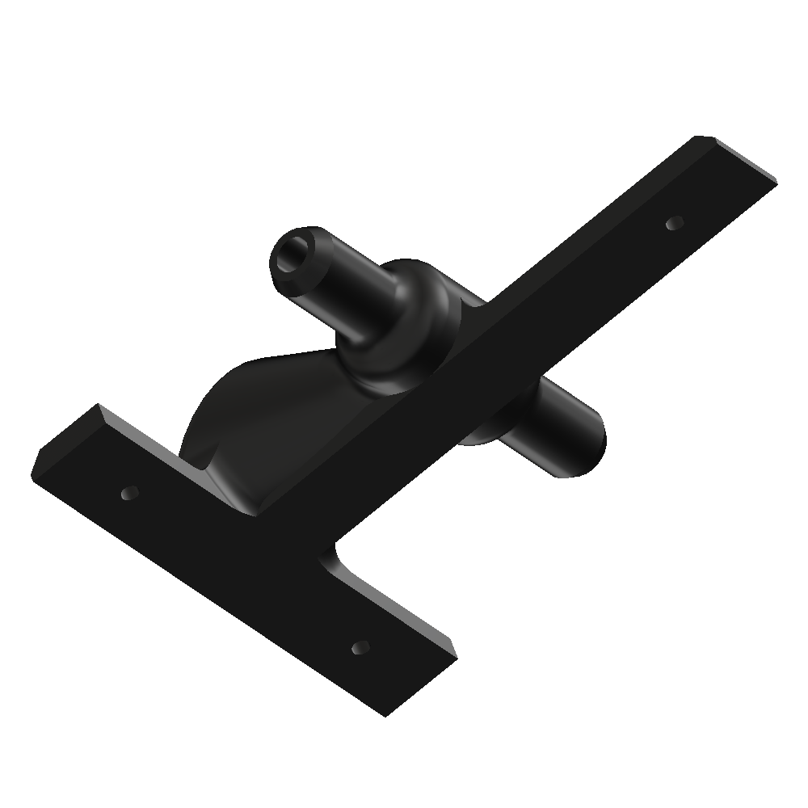

TFlow Rodent Anesthesia Mask
Simple non-stereotaxic stabilized rodent anesthesia and analgesia mask, equipped with gas-scrubbing port and stabilized base.
 If this product interests you but you're not sure, please don't hesitate to email
We will be more than happy to provide you with product specifications and options. We can also make slight sizing modifications based on your curren lab arrangement.
Most non-stereotaxic masks are:
Unstable by design
Instability requires researchers to use tape to hold the mask and tubes in place.
Instability compromises the face-mask seal.
Instability causes general frustration for the operator.
No waste gas port
Many labs use home made masks such as from funnels and cut test tubes, while these can work they leak
by design.
Isoflurane or other common gasses are not healthy to inhale in any quantity.
To Complex
Rubber diaphragms, required stabilizing tape, multiple parts, difficult to clean.
These are not necessary for great non-stereotaxic rodent anesthesia and often serve only to justify
purchase price.
TFlow has:
Simple stabilized base
The signature "T" base stops lateral and posterior roll, often seen in other masks due to torque on
tubes, or shifting rodents.
Both magnetized and non-magnetized bases are available, if you plan to use this mask on a stainless
surface or a metal work-plate the magnetization stops nearly all shifting.
If you still feel the need to tape the mask to the work surface, the posterior leg slightly longer
allowing for a universal taping position.
Waste gas port
You don't even need to have a scrubber (although we suggest it) to utilize this port, simply run a tube
If you really don't want to use it, just don't, the mask still works perfectly by directing the gas
towards the mouse and not allowing it to flow directly through.
Universal and Simple design
Simple cleaning, less breakage, intuitive user experience.
Standard TFlow mask properly fits mice, rats, and hamsters - instead of requiring different masks.